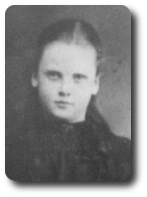
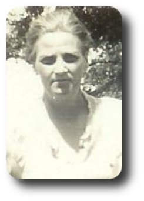

Annie Constance Newbury ( 1895 - 1973 )  -->> 1908.04.02 (12)
-->> 1908.04.02 (12) 
Daughter of George William Newbury (born in 1859 in Sundon, Bedfordshire) and Caroline Bester (born in 1865 in Little Eversden, Cambridge) who were married in 1887 in Edmonton, Middlesex.

1895 born in England ( unconfirmed: Dec 1895, Edmonton, v.3a, pg.389 )
1897.09.07 This was a big day, Elizabeth, Millie, Bill and Annie were all baptised at Tottenham in All Hallows on this Tuesday.
| 1897. Baptisms solemnized in the Parish of Tottenham in the County of Middlesex in the year 1897. |
| When Baptised |
Child's Christian Name |
Parents Name |
Abode |
Profession |
| 1897 Septr 7 |
Annie Constance |
George William & Caroline |
8 Prospect Place, Church Row |
Grave digger |
1901.03.31 (5) living in Tottenham, Middlesex, England at 8 Prospect Place
| 1901 UK Census, Civil Parish of Tottenham, Ecclesiastical Parish of All Hallows (part of) |
| Residence: 8 Prospect Place, Tottenham, Middlesex |
| Last names |
First names |
Relation to Head |
Condition as to Marriage |
Age on Last Birthday |
Occupation |
Where Born |
| NEWBURY |
GEORGE |
Head |
M |
42 |
Labourer |
Beds Bedford |
| NEWBURY |
CAROLINE |
Wife |
M |
37 |
-- |
E Cambridge |
| NEWBURY |
ELIZABETH |
Daur |
-- |
13 |
-- |
Middx Edmonton |
| NEWBURY |
MILLICENT |
Daur |
-- |
10 |
-- |
Middx Edmonton |
| NEWBURY |
WILLIAM |
Son |
-- |
7 |
-- |
Middx Edmonton |
| NEWBURY |
ANNIE |
Daur |
-- |
5 |
-- |
Middx Edmonton |
| NEWBURY |
GEORGE |
Son |
-- |
10 m. |
-- |
Middx Edmonton |
1904.10.21 father George William Newbury dies in England
1905 sister Elizabeth Newbury (17) marries Harry Allinson in Edmonton, Middlesex, England
1908.04.02 (12) Annie emigrates to Canada
| 1908.04.02 Sailed from Liverpool, England on the S.S. Canada (stopped in Halifax, Nova Scotia) |
| 1908.04.11 Arrived in Portland, Maine, U.S.A. |
| Amt of Cash |
Name of Passenger |
Age |
Able to Read |
Able to Write |
Married or Single |
Occupation |
Country of Birth |
Destination |
| $40.00 |
Newbury, Caroline |
43 |
Y |
Y |
W |
To Sister to be a domestic |
English |
Orillia |
| -- |
Newbury, William |
14 |
Y |
Y |
S |
Child |
English |
Orillia |
| -- |
Newbury, Annie |
12 |
Y |
Y |
S |
Child |
English |
Orillia |
| -- |
Newbury, Thomas |
7 |
Y |
Y |
S |
Child |
English |
Orillia |
| Above from Library and Archives Canada, Reference: RG 76, Microfilm: T-4689: ship's passenger list, pg.15 |
| From List or Manifest of Alien Passengers for the United States Immigration Officer at Port of Arrival: |
Nearest Relative or Friend in Country Whence Alien Came: daughter Mrs. Allinson, Boundary Rd., Harwich, Essex
Joining a Relative or Friend?: Mrs. Perrin, 31 King St., Orillia, Ont. |
1909.09.09 sister Millicent Newbury emigrates to Canada
1911.04.18 (16) sister Elizabeth dies in Orillia, her baby survies
1911.06.01 census: living in Orillia, Ontario, Canada on Dunlop Street [census pg.17], [census pg.18]
| 1911 CAN Census, Civil Parish of Tottenham, Ecclesiastical Parish of All Hallows (part of) |
| Residence: Dunlop Street, Orillia Ontario |
| Name of each person |
Relation to Head |
Single, Married ... |
Month of birth |
Year of birth |
Age on last birthday |
Place of birth |
Year of naturalization |
Racial origin |
Religion |
Occupation |
Where Employed |
| ALLINSON HARRY |
Head |
M |
Aug |
1883 |
27 |
England |
1910 |
English |
Anglican |
?? |
House Painting |
| ALLINSON CONSTANCE |
Daughter |
S |
Mar |
1906 |
5 |
England |
1910 |
English |
Anglican |
None |
-- |
| ALLINSON ELIZABETH |
Daughter |
S |
April |
1911 |
?? |
Ontario |
-- |
English |
Anglican |
None |
-- |
| NEWBURY CAROLINE |
Mother in Law |
W |
May |
1866 |
45 |
England |
1907 |
English |
Anglican |
None |
-- |
| NEWBURY ANNIE |
Sister in Law |
S |
Sep |
1894 |
16 |
England |
1907 |
English |
Anglican |
None |
-- |
| NEWBURY THOMAS |
Brother in Law |
S |
Oct |
1900 |
10 |
England |
1907 |
English |
Anglican |
None |
-- |
1912.07.18 (17) marries in Toronto, Ontario, Canada Affidavit says: On the 18th day of July 1912 in the City of Toronto in the County York; Husband: Frederick Bingley, Since July 1, 1900, usual place of abode is in York County Toronto; Place of Birth: unreadable; Canadian, Bachelor, 22 years old, Christian, 664 Bathurst St., Toronto; Father: William Bingley, Sales Agent; Mother: Jane Poot Bingley; Wife: Constance Annie Bingley, Place of Birth: Tottenham; Canadian, Spinster, 19 years old, Christian, Toronto, Father: George Newbury, Gardener, Mother: Caroline Bester Newbury; Witnesses: W.A. Bingley - 664 Bathurst and Harry Hopper - 117 Harrison St., Toronto.
Frederick Bingley ( 1890 - 1929 )
1890.02.21 born in Canada
1929.10.04 (39) dies, Register says: County of Wentworth, Division of Hamilton. Surname: Bingley; Full Given Name: Fred; Place of Death: St. Josephs Hospital; Married; Age: 39 yrs; Place/Date of Birth: Canada, Feb. 21, 1890; Occupation: Traffic Officer; Father: William Bingley, born Canada; Mother: Jane Po?t, born Canada; Physician: G.S.Rennie, Chief Coroner, 150 Main St. E.; Informant: Walter Bingley, brother, 298 Wychwood Ave., Toronto; Date/Place of Burial: Prospect Cemetery, Toronot, Oct. 7th, 1929; Undertaker: Ernest T. Thompson, 688 Danforth Ave.; Date of Death: October 4th, 1929; Cause of Death Primary: Haemorrhage from 7 to 4.30, While riding his motorcycle he appeared to lose control and shot into a ditch striking a tree; Cause of Death Contributory: injury from accident; Did an operation preceed death? No; Was there an autopsy? Yes. Physician: G. S. Rennie, Chief Coroner.
1912.11.11 mother Caroline (Bester) Newbury (47) marries Coleman Armstrong in Orillia, Ontario, Canada
1913.11.15 son is Frederick Bingley born
1914.09.11 sister Millie Newbury (24) marries Herbert Cameron in Orillia, Ontario, Canada
1915 son William Bingley is born in Swansea, Ontario, Canada
1915.08.25 son William Bingley dies in Swansea, Ontario, Canada, age 1 month
1916 son Francis Bingley is born in Toronto, Ontario, Canada
1916.11.20 son Francis Bingley dies in Toronto, Ontaro, Canada, age 3 months
1918 daughter Eleanorre Bingley is born
1919 daughter Edith Bingley is born
1919.07.19 brother William Newbury (19) marries Letitia Reber in Toronto, Ontario, Canada
1920 living in Toronto, Ontario, Canada at 311 Euclid Ave
1921.05.08 living in Toronto, Ontario, Canada at 17 Phipps Street
1921.09.22 brother Thomas Newbury (21) marries Alice Latham in Toronto, Ontario, Canada
1924.06.22 son Edward Bingley is born
1927.08.14 son William Bingley is born in Orillia, Ontario, Canada
1927.08.28 son William Bingley dies in Orillia, Ontario, Canada, age 2 weeks
1929.10.04 (34) husband Fred, age 39, dies in a motorcycle accident near Hamilton, Ontario
1936.06.02 (41) mother Caroline (Bester, Newbury) Armstrong, age 70, dies in Orillia, Ontario, Canada
1948.08.22 (53) brother Thomas, age 47, dies near Bath, Ontario, Canada
1966.08.03 son Edward Bingley dies.
1973 (78) Annie dies in Ontario, Canada [cemetery marker in Beaverton, Ontario, Stonechurch graveyard]
-
Frederick Bingley ( 1913 - 1986 ) -->>

1913.11.15 b. [source: Social Security Death Index]
1986.10 d. Detroit, Michigan, USA [source: Social Security Death Index]
-
William Henry Bingley (1915 - 1915 )
1915 b. Swansea, Ontario, Canada
1915.08.25 d. Swansea, Ontario, Canada Register says: County of York, Division of Toronto; Surname: Bingley; Christian Name: Wm. Henry; Male; Age: 1 month 11 days; Date of Death: Aug. 25, 1915; Place of Birth: 11 Beresford Av. Swansea; Place of Death: 11 Beresford Av. Swansea; Place of Burial: --; Father: Frederick Bingley; Mother: Cnstance A. Newbury; Physician: J. Archibald Whilliams; Name of Informant: Frederick Bingley, 11 Beresford Av. Swansea; Disease Causing Death: Malnutrition with Enteritis, duration one month
-
Francis Bingley ( 1916 - 1916 )
1916 b. Toronto, Ontario, Canada
1916.11.20 d. Toronto, Ontario, Canada Register says: County of York, Division of Toronto; Surname: Bingley; Christian Name: Francis; Sex: M; Age: 3 Mths; Date of Death: Nov 20-1916; Place of Birth: Toronto; Place of Death: 122 West Lodge Ave.; Place of Burial: Prospect Cemty; Father: Frederick Bingley; Mother: Constance Newberry; Cause of Death: Suffocated in Sleep; Physician: W. T. Burns?; Name of Informant: A.W. Niles?, 396 College St.;
-
Eleanorre L. Bingley ( 1918 - 2000 )
19?? m. John William Ainsworth ( 1908 - 1973 )
2000 (82) d. [cemetery marker]
-
Edith E. Bingley ( 1919 - 1994)
19?? m. Garnet Knight ( 1909 - 1973 )
1994 (75) d.
-
Baby (boy) Bingley ( 1920 - 1920 )
1920.07.20 Toronto, Ontario, Canada (stillborn) Register says: County of York, Division of Toronto; Surname: Bingley; Full Given Name: Baby; Place of Death: 125 Rusholme Rd.; Sex: M; Place of Birth: Toronto; Father: Fred Bingley; Mother: Annie Newbury; Informant: Father, 311 Euclid Ave.; Place of Burial: Prospect; Date of Burial: --; Undertaker: A.W. Niles?, 396 College St.; Date of Death: July 12-20; Cause of Death: Endometriosis? can't read this word, plus premature birth. Physician: ?. J. Niddice?, 484? Dovercourt Rd.
-
Baby (boy) Bingley ( 1921 - 1921 )
1921.05.08 Toronto, Ontario, Canada (stillborn) Register says: County of York, Division of Toronto; Surname: Bingley; Full Given Name: Baby; Place of Death: Western Hospital; Sex: M; Place/Date of Birth: Toronto, May 8-21; Father: Fred Bingley, born in Toronto; Mother: Annie Newberry, born in Toronto; Name of Informant: F. Bingley, 17 Phipps St., father; Place/Date of Burial: Prospect, May 12-21; Undertaker: ? Ellis, 333 College; Date of Death: May 8-21; Cause of Death: Stillborn; Physician: B. J. Niddris?, 484 Dovercourt Rd.
-
Edward George (Buddy) Bingley ( 1924 - 1966 )
1924.06.22 b.
1966.08.03 (42) d. [cemetery marker]
-
William Edward Bingley ( 1927 - 1927 )
1927.08.14 b. Orillia, Ontario, Canada
1927.08.28 d. Register says: County of Simcoe, Division of Orilia; Surname: Bingley, Full given Names: William Edward; Place of Death: Queen M. Hospital; Racial Origin: Irish; Age: 14 days; Date/Place of Birth: Aug 14/27, Orillia; Length of Residence: 14 days; Father: Frederick Bingley, born Colborn, Ont.; Mother: Annie Constance Newbury, born England; Physician: Dr. W. ?. Brown, Orillia, Ont.; Informant: Frederick Bingley, Orillia, Ont., father; Date/Place of Burial: August 30/27, Orillia, Ont.; Undertakers: J. A. Mundell, Orillia, Ont.; Date of Death: August 28/27; Cause of Death: Marasmus, premature birth.
{kind=link}
![[cemetery marker]](images/bingley-eleanorre-stone.jpg){kind=link}
![[cemetery marker]](images/bingley-edward-stone.jpg){kind=link}